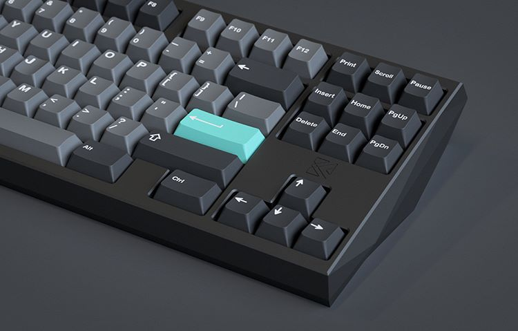
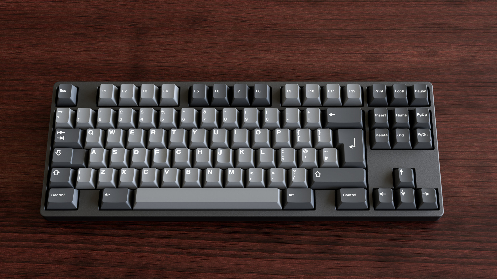

| Hình ảnh | Tên sản phẩm | Giá tiền (VNĐ) | Số lượng trong kho | Số lượng đã bán |
|  | Bàn phím cơ màu Hường | 400.000 | 32 | 18 |
|  | Bàn phím cơ Xanh ngọc | 400.000 | 48 | 2 |
 |
Bàn phím cơ Cam | 400.000 | 35 | 15 |
 |
Bàn phím MeTroPoLice | 600.000 | 9 | 11 |
 |
Bàn phím MIZU | 700.000 | 3 | 12 |